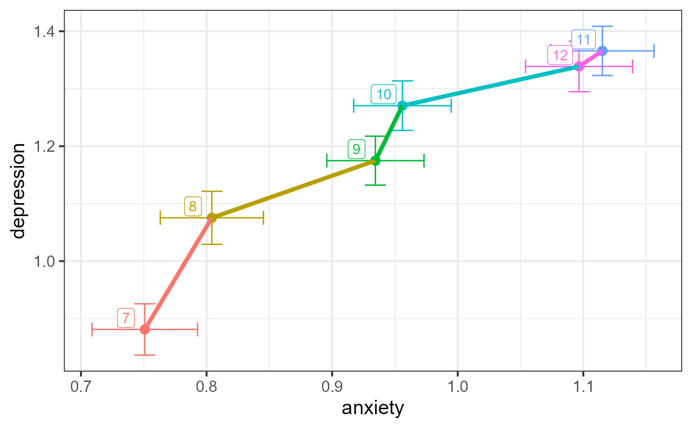

This data was taken from the National Longitudinal Study of Adolescent Health. It is a cross-sectional sample of participants from grades 7–12, described and analyzed by Warne (2014).
Format
A data frame with 4344 observations on the following 3 variables.
gradean ordered factor with levels
7<8<9<10<11<12depressiona numeric vector
anxietya numeric vector
Source
Warne, R. T. (2014). A primer on Multivariate Analysis of Variance (MANOVA) for Behavioral Scientists. Practical Assessment, Research & Evaluation, 19 (1). https://scholarworks.umass.edu/pare/vol19/iss1/17/
Details
depression is the response to the question "In the last month, how
often did you feel depressed or blue?"
anxiety is the response to the question "In the last month, how often
did you have trouble relaxing?"
The responses for depression and anxiety were recorded on a
5-point Likert scale, with categories 0="Never", 1="Rarely",
2="Occasionally", 3="Often", 4="Every day"
Examples
data(AddHealth)
if(require(dplyr) & require(ggplot2)) {
# find means & std.errors by grade
means <- AddHealth |>
group_by(grade) |>
summarise(
n = n(),
dep_se = sd(depression, na.rm = TRUE) / sqrt(n),
anx_se = sd(anxiety, na.rm = TRUE) / sqrt(n),
depression = mean(depression),
anxiety = mean(anxiety) ) |>
relocate(depression, anxiety, .after = grade) |>
print()
# plot means with std.error bars
ggplot(data = means, aes(x = anxiety, y = depression,
color = grade)) +
geom_point(size = 3) +
geom_errorbarh(aes(xmin = anxiety - anx_se,
xmax = anxiety + anx_se)) +
geom_errorbar(aes(ymin = depression - dep_se,
ymax = depression + dep_se)) +
geom_line(aes(group = 1), linewidth = 1.5) +
geom_label(aes(label = grade),
nudge_x = -0.015, nudge_y = 0.02) +
scale_color_discrete(guide = "none") +
theme_bw(base_size = 15)
}
#> Loading required package: dplyr
#>
#> Attaching package: 'dplyr'
#> The following objects are masked from 'package:stats':
#>
#> filter, lag
#> The following objects are masked from 'package:base':
#>
#> intersect, setdiff, setequal, union
#> Loading required package: ggplot2
#> # A tibble: 6 × 6
#> grade depression anxiety n dep_se anx_se
#> <ord> <dbl> <dbl> <int> <dbl> <dbl>
#> 1 7 0.881 0.751 622 0.0447 0.0420
#> 2 8 1.08 0.804 664 0.0461 0.0411
#> 3 9 1.17 0.934 778 0.0426 0.0387
#> 4 10 1.27 0.956 817 0.0431 0.0388
#> 5 11 1.37 1.12 790 0.0428 0.0411
#> 6 12 1.34 1.10 673 0.0439 0.0426

# fit mlm
AH.mod <- lm(cbind(anxiety, depression) ~ grade, data=AddHealth)
car::Anova(AH.mod)
#>
#> Type II MANOVA Tests: Pillai test statistic
#> Df test stat approx F num Df den Df Pr(>F)
#> grade 5 0.022415 9.834 10 8676 < 2.2e-16 ***
#> ---
#> Signif. codes: 0 '***' 0.001 '**' 0.01 '*' 0.05 '.' 0.1 ' ' 1
summary(car::Anova(AH.mod))
#>
#> Type II MANOVA Tests:
#>
#> Sum of squares and products for error:
#> anxiety depression
#> anxiety 5210.233 3021.691
#> depression 3021.691 6058.911
#>
#> ------------------------------------------
#>
#> Term: grade
#>
#> Sum of squares and products for the hypothesis:
#> anxiety depression
#> anxiety 75.02650 87.57399
#> depression 87.57399 112.76722
#>
#> Multivariate Tests: grade
#> Df test stat approx F num Df den Df Pr(>F)
#> Pillai 5 0.0224153 9.833964 10 8676 < 2.22e-16 ***
#> Wilks 5 0.9776192 9.872584 10 8674 < 2.22e-16 ***
#> Hotelling-Lawley 5 0.0228579 9.911186 10 8672 < 2.22e-16 ***
#> Roy 5 0.0211939 18.387786 5 4338 < 2.22e-16 ***
#> ---
#> Signif. codes: 0 '***' 0.001 '**' 0.01 '*' 0.05 '.' 0.1 ' ' 1
heplot(AH.mod, hypotheses="grade.L",
fill=c(TRUE, FALSE),
level = 0.4)